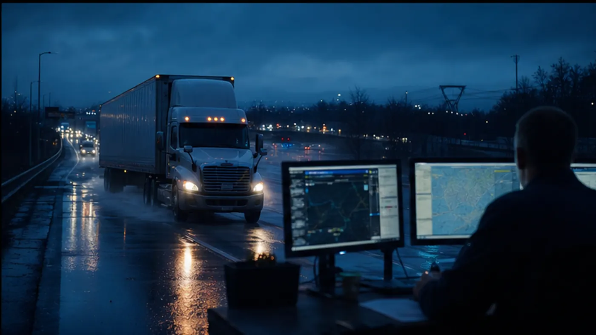

Tracking context
Show where the shipment stands and what happens next.
Pair milestone visibility with appointments, exceptions, proof requirements, and accountable next actions.
Continue in the portal →Tracking
Follow the shipment from submitted request through settlement complete.
Shipment timeline
Simulated record viewRequest to settlement
BOF managed lifecycle
Workflow map